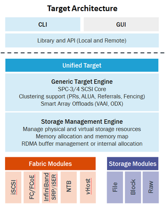

Overview
LinuxIO (LIO) is the standard open-source SCSI target in Linux. It supports all prevalent storage fabrics, including Fibre Channel (QLogic, Emulex), FCoE, iEEE 1394, iSCSI (incl. Chelsio offload support), iSER (Mellanox InfiniBand), SRP (Mellanox InfiniBand), USB, vHost, and more.
The advanced feature set of LinuxIO has made it the SCSI target of choice for many storage array vendors, for instance allowing them to achieve VMware Ready certifications. Native support for LIO in QEMU/KVM, libvirt, and OpenStack makes it an attractive storage option for cloud deployments.
Architecture
The LinuxIO engine implements the generic SCSI semantics.

- High-performance, non-blocking, multithreaded architecture with SSE4.2 support
- CPU architectures: x86, ia64, Alpha, Cell, PPC, ARM, MIPS, etc.
- Distributions: CentOS, Debian, Fedora, openSUSE, RHEL, Scientific Linux, SLES, Ubuntu
- Platforms: PC architecture, Sony PS2/PS3, Raspberry Pi, Technologic TS-7800
Frontend — Fabric Modules
Fabric Modules implement the protocols to transmit data over diverse fabrics, providing transport media independence.
Fibre Channel
QLogic, Emulex
iEEE 1394
iSCSI
Software, Chelsio
Loopback
SCSI virtualization
USB Gadget
vHost
virtio / virtio-scsi PV guests
targetcli.
Backend — Backstores
Backstores implement the methods to access data on devices, providing storage media independence.
- Backstores: SATA, SAS, SCSI, SSD, FLASH, DVD, USB, NVMe, ramdisk, SCSI passthrough, userspace SCSI devices via TCMU, userspace block devices via ublk, etc.
- Virtualization of storage media; transparent mapping of I/O to LUNs
Advanced SCSI feature set
targetcli
targetcli provides the fabric-agnostic single-node management shell for LIO.
It aggregates and exports all LIO SAN functionality via the RTSlib library and API.
$ targetcli
/> ls
o- / ...................................................................
o- backstores ........................................................
o- targets ...........................................................
Compatibility & certifications
- Microsoft: Windows® Server 2008/R2/2012 and Windows® XP/Vista/7/8
- Apple: macOS (via third-party initiator)
- Linux: CentOS, Debian, Fedora, openSUSE, RHEL, Scientific Linux, SLES, Ubuntu
- Unix: Solaris 10, OpenSolaris, HP-UX
- VMs: vSphere 5, Red Hat KVM, Microsoft Hyper-V, Oracle xVM/VirtualBox, Xen
High availability & clustering
LIO is designed from the ground up to support highly available and clustered storage:
- Deeply embedded high availability (Network RAID1)
- Scale-out clusters and disaster recovery solutions